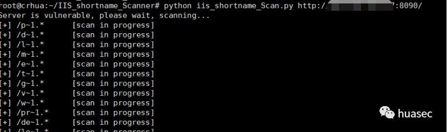
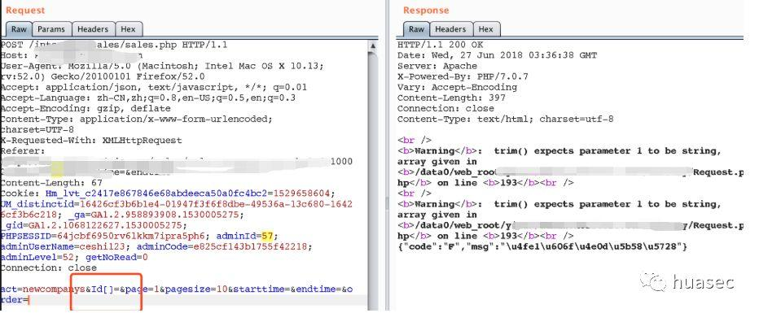
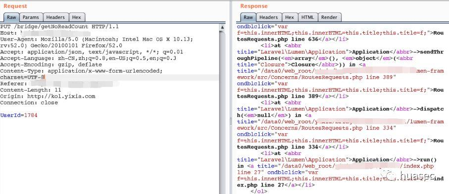
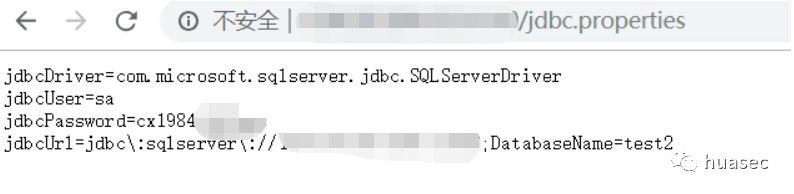
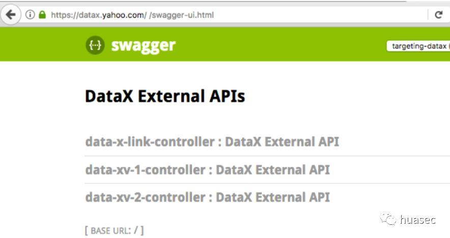
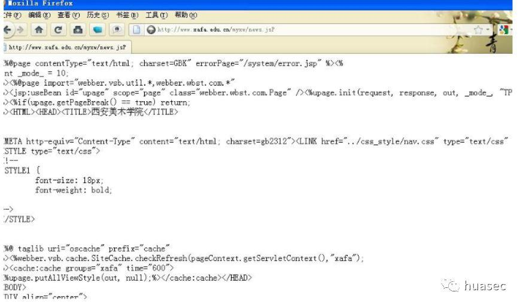
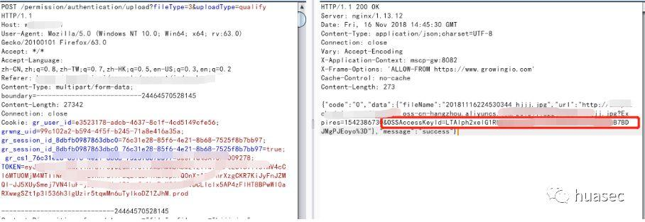
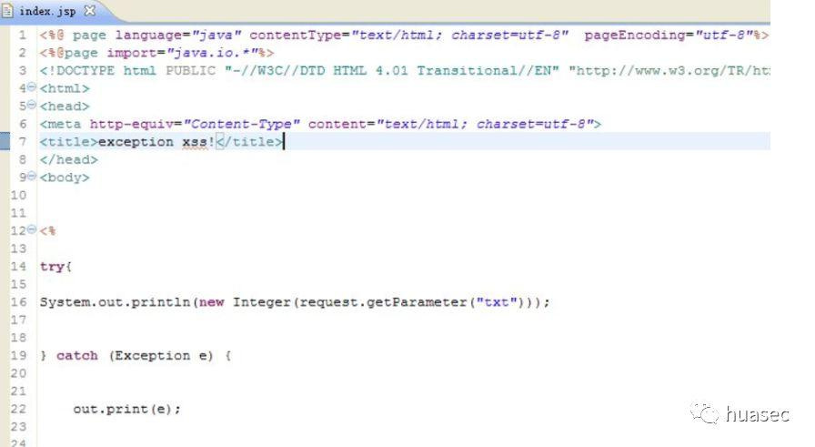
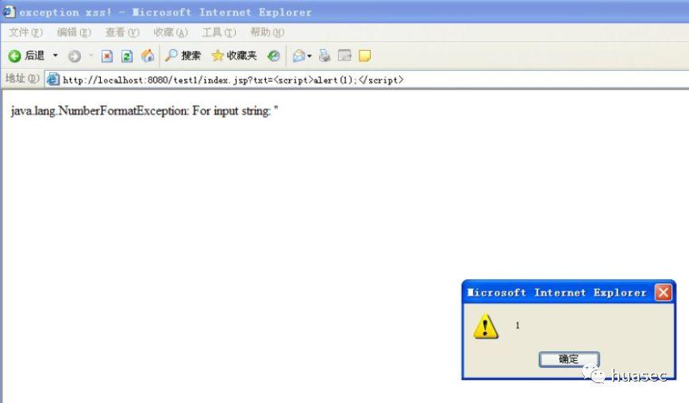
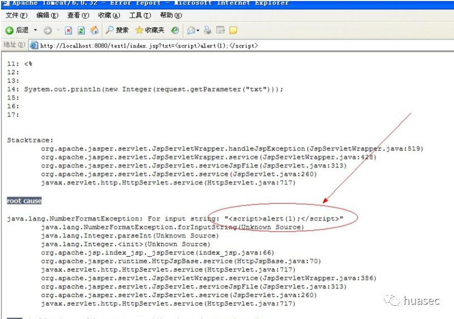

在渗透测试过程中，由于网站配置不当，或者代码逻辑错误，往往会泄露一些敏感信息，本文对此做一个总结，欢迎各位补充。
01、Apache样例文件泄露
apache 的一些样例文件没有删除，可能存在可能存在cookie、session伪造，进行后台登录操作。常见的路径有：
1 | http://xxx.com/examples/servlets/servlet/CookieExample |
02、IIS短文件名
工具：https://github.com/lijiejie/IIS_shortname_Scanner
利用：

03、字段加[] 造成信息泄露
网站所有参数均存在，把参数变为数组即可报错出网站绝对路径。
比如：
04、修改请求方法
将get方法改为put 程序就报错，泄漏网站绝对路径。
比如：

当然，也可修改位其他方法，多fuzz。
05、war文件信息泄露
war文件信息泄露是指部署在war文件由于配置不当，导致其整个报文件以及其他重要的配置文件信息泄露，例如可以直接浏览目录，获取其下面的配置文件：WEB-INF/jdbc.properties,jdbc.properties为数据库链接配置文件。包含数据库链接的账户和密码等重要信息。
比如：

java 一般重要的配置文件位于 WEB-INF 目录下，其常见的重要的配置文件有：
1 | config/config.properties |
06、swagger
常见路径：
1 | /swagger-ui.html |
https://datax.yahoo.com/%20/。然后我看到了以下页面。

07、Tomcat
tomcat 后缀改成大写，会显示源码，只要把jsp文件后缀名改为大写就可以
比如：

08、阿里云oosaccesskey泄露
上传文件处，在返回包中直接显示了阿里oss静态服务器的OSSAccessKeyId的值，导致信息泄漏 。

09、j2ee应用异常信息
Java异常处理机制（Exception）简要说明：Java中它是由Trowable类的两个子类的两大部分组成，Error类和Exception类。Error是不推荐捕获的（请查看Java异常处理机制中Error与Exception的区别），而Exception类除了子类RuntimeException是不能被捕获，其他子类的异常必须捕获，简单来讲，就产生异常信息了。
但Exception产生异常信息的过程有个特点，当发生异常时，异常抛给调用该函数的上一级函数，直到出现包含异常处理（catch）的层为止，这个给开发者在程序调试中带来很大的方便，能够快速定位问题所在等
形成XSS的场景：与上面场景不同的地方有两个：
1、如果开发者自己处理了异常信息但还是向用户抛出（在实际开发中这情况还不少，还做个用户体验页面，让用户把这些异常信息反馈给管理员（当然，开发者本意是好的！）。）
2、带有用户输入而又未做XSS防御处理的数据（攻击者的恶意代码）。


当然，如果最后默认是交给容器处理输出，是不会有这问题，如图：

10、源代码泄露
(1).Mercurial .hg 源码泄露
hg在初始化代码库的时候，会在当前目录下面产生一个.hg的隐藏文件
eg:
1 | http://www.example.com/.hg/ |
工具：
1 | https://github.com/kost/dvcs-ripper |
使用：
1 | rip-hg.pl -v -u http://www.example.com/.hg/ |
(2).git 源码泄露
在运行 git init 的时候，在当前目录下会产生一个.git 文件。
eg:
1 | http://www.example.com/.git/ |
工具：Githack
1 | githack.py http://www.example.com/.git/ |
(3).DS_Store 文件泄露
在发布代码时未删除文件夹中隐藏的.DS_store，被发现后，获取了敏感的文件名等信息。
eg:
1 | http://www.example.com/.ds_store/ |
工具：
1 | https://github.com/lijiejie/ds_store_exp |
使用：
1 | ds_store_exp.py http://www.example.com/.ds_store/ |
(4).svn 源代码泄露
使用svn版本控制系统时，由于错误操作将.svn文件暴露在外网环境中，即可利用该文件还原出服务器源码、SVN服务器账号密码等信息。eg:
1 | http://www.example.com/.svn/entries |
工具：seay-Svn
(5).cvs文件泄露
1 | http://www.example.com/CSV/Root 返回根信息 |
(6).bazaarbazaar信息泄露
bazaarbazaar是一个版本控制系统，可以追踪项目历史
eg:
1 | http://www.example.com/.bzr/ |
工具：
1 | https://github.com/kost/dvcs-ripper |
使用：
1 | rip-bzr.pl -v -u http://www.example.com/.bzr/ |
(7).WEB-INF/web.xml 泄露
WEB-INF是Java的WEB应用的安全目录。如果想在页面中直接访问其中的文件，必须通过web.xml文件对要访问的文件进行相应映射才能访问。
1 | /WEB-INF/web.xml |
11、总结
以上是笔者学习中遇到的，欢迎各位大佬继续补充。